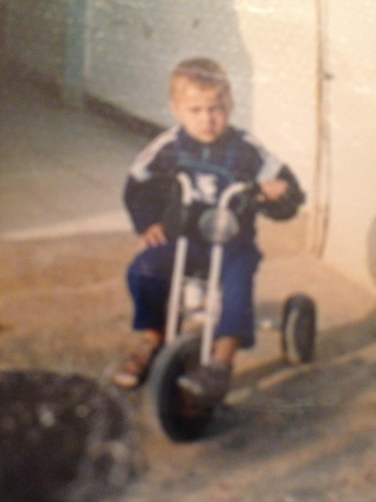
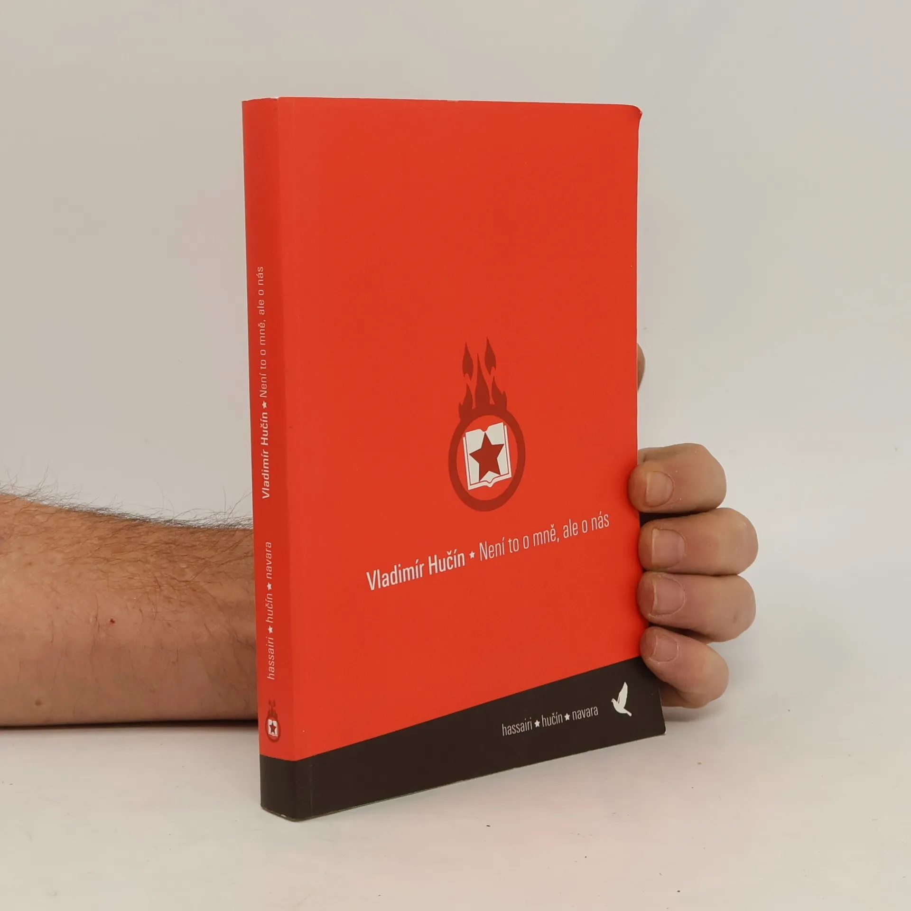
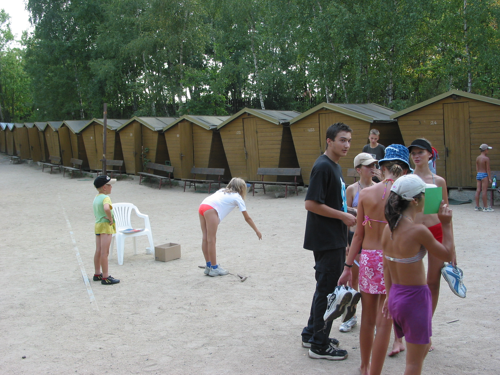
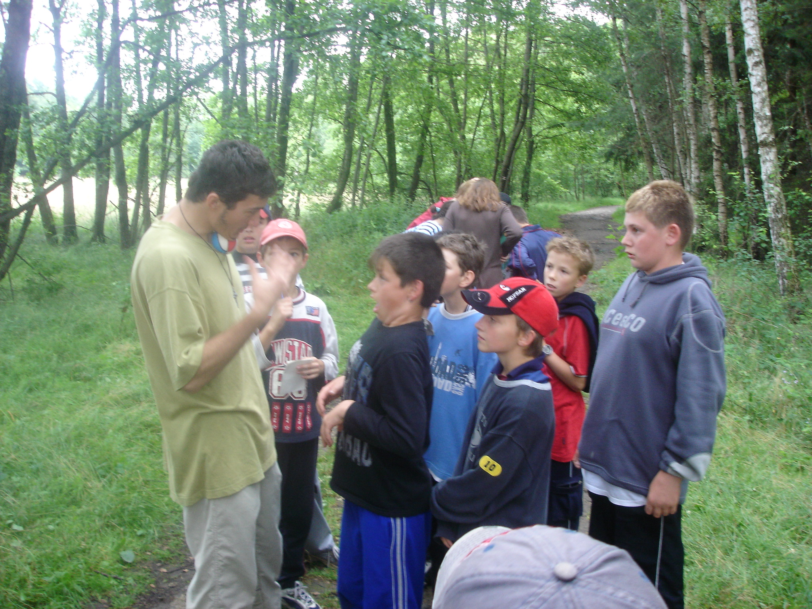
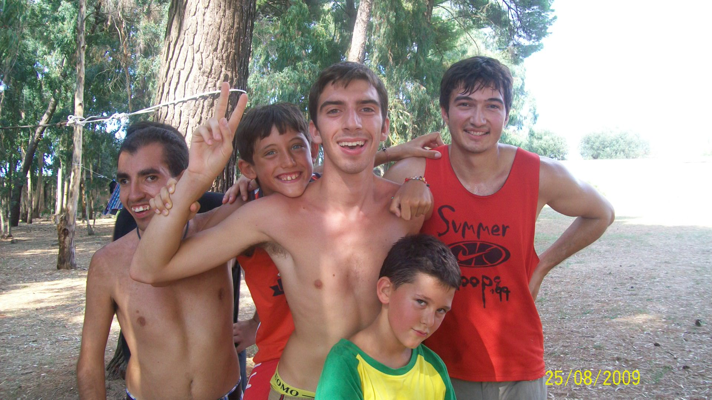
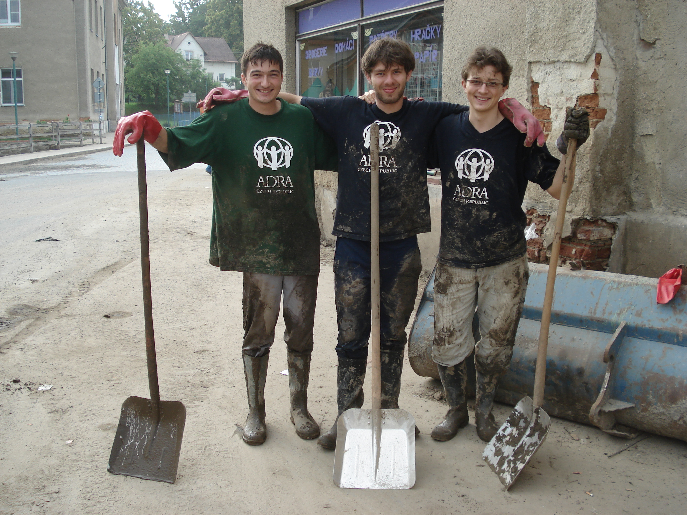
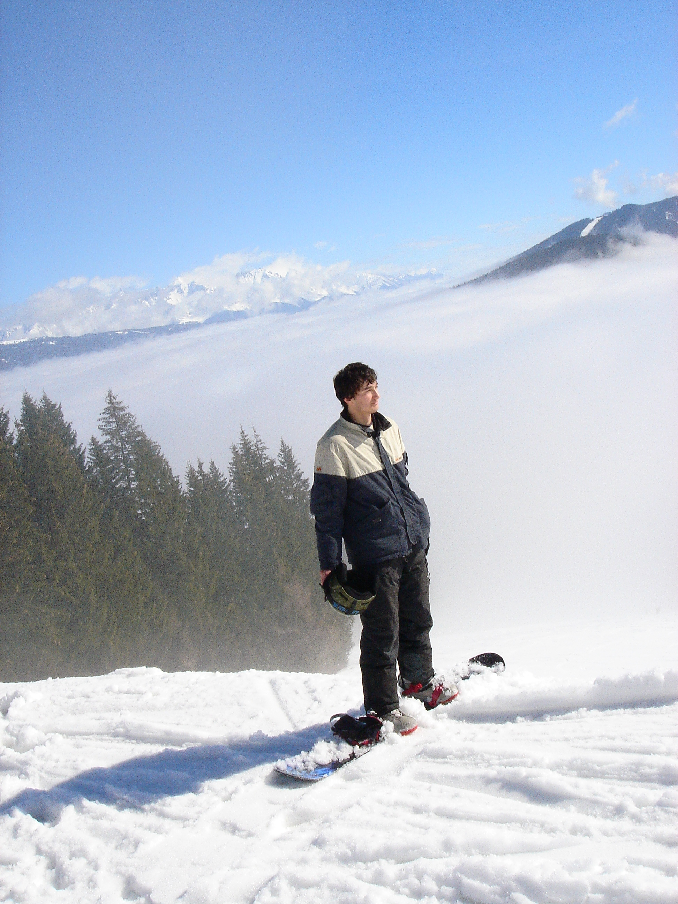

I was born in Zaghouan, a small town in northern Tunisia, nestled beneath the ruins of a Roman aqueduct that once carried water to Carthage. I was three years old when my family moved to Prague.

It was the mid-1990s. The Czech Republic was still finding its shape after the Velvet Revolution. I grew up speaking Czech in the streets and Arabic at home, navigating two worlds that rarely overlapped. Prague became the place where I learned how to learn—at Gymnázium Jiřího Gutha-Jarkovského, and then at the Institute of Economic Studies at Charles University, where I first encountered the power of data to explain the world.

Towards the end of high school, I found a job on jobs.cz that changed the way I thought about words. The assignment was simple: transcribe audio recordings of interviews between the journalist David Navara and Vladimír Hučín, a principled anti-communist who had taken up arms against the totalitarian regime in the 1970s and 80s.
The transcription was anything but simple. Hučín spoke in fragments—not in whole sentences, a bit like Trump during a speech—with a strong Moravian dialect that was difficult to parse. I instinctively translated his words into the Prague Czech I knew, making them more accessible and print-ready. When David discovered this, he was horrified—he wanted the transcripts to be faithful to the recordings. He was right: the first transcription should have been authentic. But when he talked to Hučín, Hučín actually preferred the more accessible version. So we went with it.
I ended up writing a short essay at the end of the book explaining my role. The book—Vladimír Hučín: Není to o mně, ale o nás—was published by Nuabi in 2006 with my name listed as co-author, thanks to David’s generosity. To call myself a co-author is an overstatement—it is really David and Vladimír’s book. But it taught me something about the gap between spoken and written language, about editorial judgment, and about the responsibility of handling someone else’s story.


Between semesters I volunteered. I worked as an assistant counselor at children’s summer camps—the classic Czech tábor, wooden cabins in the woods, kids running through sand in the July heat. You learn things about children in those settings that you cannot learn from datasets: how a ten-year-old processes unfairness, what happens when a shy kid is handed responsibility, the precise moment a group tips from play into chaos. These were not research questions yet. But they became the intuition behind the research questions I would ask later.

In the summer of 2009, I went to Grottaglie in Puglia, southern Italy, to work at a psychotherapeutic facility set in the countryside. The program used nature therapy and socialization to support disabled youth—the idea being that structured contact with healthy volunteers, outdoors, in sunlight, could do what clinical settings alone could not. I didn’t have the vocabulary for it then, but this was my first encounter with the question that would define my career: how do environments shape development?

That same year, floods hit Moravia. I joined a volunteer crew with ADRA Czech Republic and spent days shoveling mud out of ruined homes. It was unglamorous, exhausting work—rubber boots, filthy clothes, the smell of river silt in everything. But there was something clarifying about it: when a disaster strips a community to its essentials, you see what the systems were supposed to do and where they failed. Infrastructure, preparedness, response—these are policy questions. I was beginning to see them everywhere.
In 2009, I went to the University of Washington on an exchange program. I was supposed to stay for a year. I stayed for fifteen.
Seattle became the place where everything accelerated. I started a PhD in Economics. I worked at Amazon, which was then becoming the most data-driven organization on the planet—building experimentation infrastructure, learning what it means to make decisions at scale when millions of dollars ride on getting the causal estimate right. I published research on early childhood education, school finance, and the policies that determine which children get access to quality care and which do not.
In 2020 I moved to California, still working for my Seattle employer. In 2024, I came back to Prague—Holešovice, the neighborhood on the bend of the Vltava. That same year I founded Frontier Enterprises—a company building AI-powered learning tools grounded in the science of spaced repetition, feedback, and retention. It is the crystallization of everything: the teenager who read Linux manuals at the National Technical Library, the economist who studied causal inference, the Amazon data scientist, the education researcher who saw how much learning could be improved. The work continues.

Outside of research, I snowboard, play tennis, cook, and play Go—the ancient board game that has taught me more about strategic thinking than any economics textbook. I believe the best work comes from people who take their craft seriously and their hobbies just as seriously. More about that →